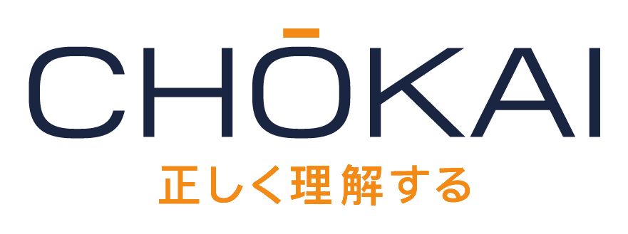
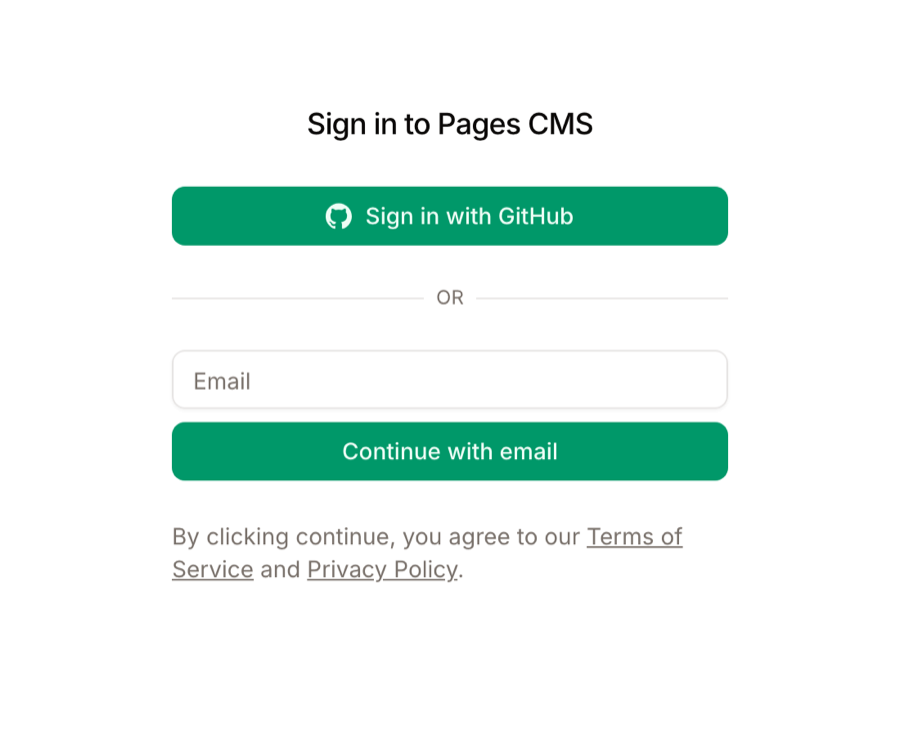
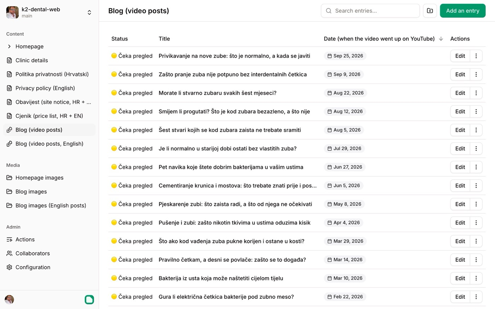
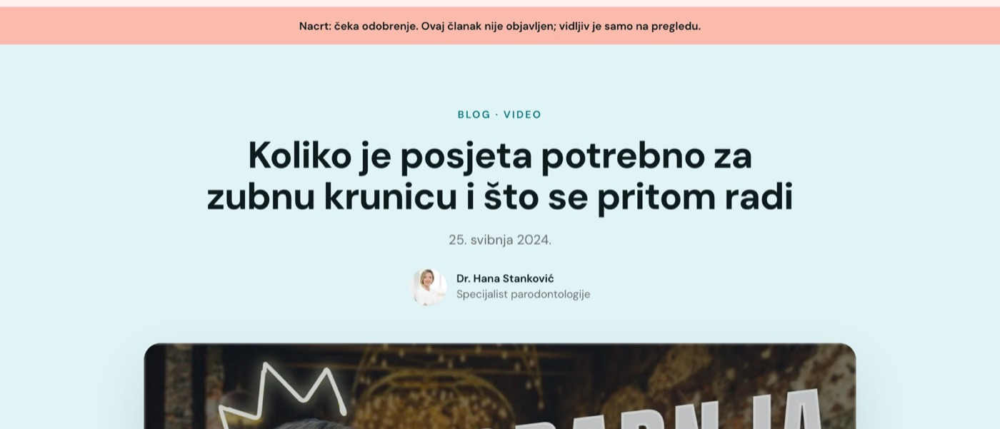
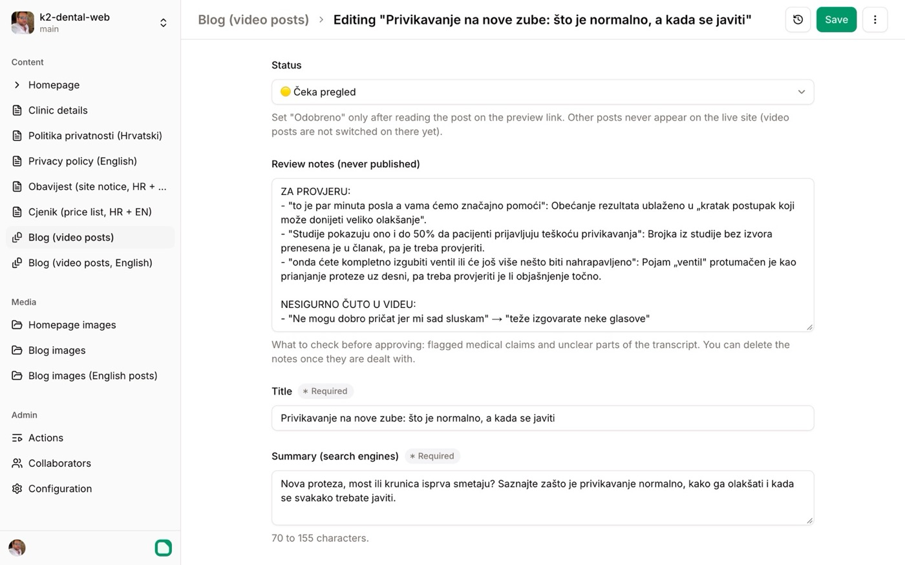
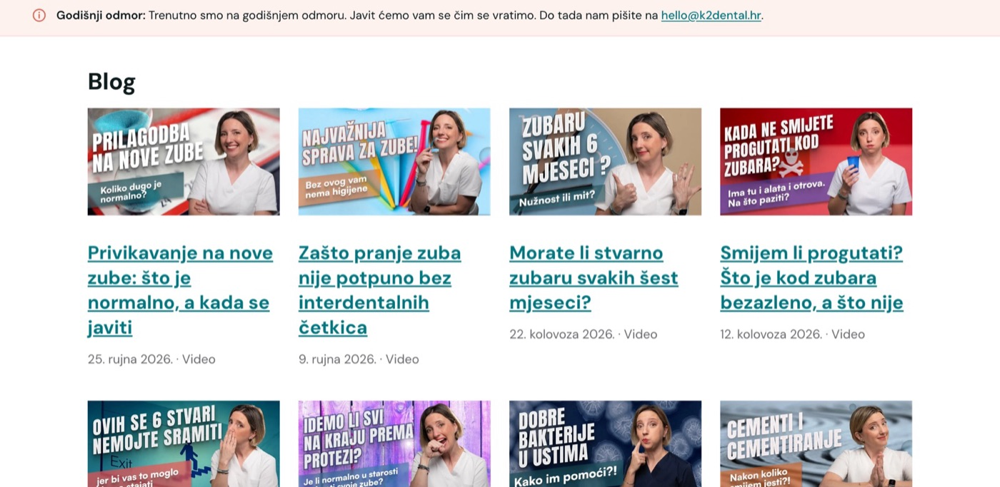

Kako pregledati i odobriti blog članke
Upute za Pages CMS, alat u kojem uređuješ tekstove nove stranice. Kako se prijaviti, gdje je što, i kako članak napisan iz videa Doktorice Četkice pregledati, ispraviti i odobriti.
Preuzmi PDF1Ukratko
Rade se dvije stvari, na dva mjesta: na pregledu čitaš članke onako kako će izgledati na stranici, a u CMS-u ih ispravljaš i odobravaš.
Pregled stranice
Nova stranica kakva će biti, s člancima koji još čekaju odobrenje. Samo za čitanje. Ne treba prijava.
Pages CMS
Ovdje mijenjaš tekst članka i njegov status. Prijava e-mailom i kodom, bez lozinke.
Ti odlučuješ
Članak ide javno samo kad mu postaviš status 🟢 Odobreno. Ništa drugo ne ide javno.
Ništa se ne može pokvariti
Svako spremanje pamti se kao nova verzija. Svaku promjenu mogu vratiti.
2Poveznice
Spremi ih u oznake (favorite) u pregledniku.
3Pristup: tko što vidi i kako se prijaviti
Pregled stranice: bez prijave
- Otvara se bez lozinke. Tko ima poveznicu, vidi stranicu.
- Google je ne prikazuje u rezultatima pretrage, i nitko je ne može naći slučajno.
- Poveznicu ipak ne šalji dalje: na pregledu su i nacrti koje još nisi odobrila.
Pages CMS: pozivnica i kod na e-mail
- Pozivnicu šaljem ja. Na svoj e-mail dobiješ poruku na engleskom: „You were added to "k2-dental-web" on Pages CMS“. Bez nje se ne možeš prijaviti.
- Nema lozinke ni GitHub računa. Kod svake prijave upišeš svoj e-mail, a Pages CMS ti pošalje šesteroznamenkasti kod. Kod vrijedi 5 minuta.
- Kao pozvana urednica možeš mijenjati tekstove i slike. Postavke stranice i popis korisnika ne vidiš i ne možeš ih promijeniti.
- Pages CMS je vanjski alat (pagescms.org) koji stranica koristi. Ne plaća se i ne treba ništa instalirati; radi u pregledniku, i na mobitelu.
Prva prijava, korak po korak
- Otvori poveznicu Pages CMS: članci iz poglavlja 2.
- Ispod gumba Sign in with GitHub upiši svoj e-mail (onaj na koji je stigla pozivnica) i klikni Continue with email. Gumb za GitHub ne trebaš.
- Otvori e-mail s naslovom „Your Pages CMS temporary code is …“. Ako ga nema za minutu, pogledaj neželjenu poštu (spam).
- Upiši šest znamenki iz poruke. Ako je prošlo više od 5 minuta, zatraži novi kod.
- Otvara se popis članaka. Prijava traje neko vrijeme, pa kod ne trebaš svaki put.

4Snalaženje u CMS-u
CMS je na engleskom, a sadržaj je na hrvatskom. Lijevo je izbornik s dijelovima stranice; desno je ono što si otvorila.

Što je u izborniku
| U izborniku piše | Što je to | Diraš li? |
|---|---|---|
| Blog (video posts) | Članci napisani iz videa Doktorice Četkice. Ovdje radiš. | Da |
| Blog (video posts, English) | Engleske verzije odobrenih članaka. Dolaze kasnije; javit ću ti. | Kasnije |
| Obavijest | Traka ispod zaglavlja na svim stranicama (npr. godišnji odmor). Sada je uključena s probnim tekstom. | Po dogovoru |
| Cjenik | Cjenik usluga, na hrvatskom i engleskom. | Po dogovoru |
| Homepage | Svi tekstovi i slike početne stranice. | Po dogovoru |
| Clinic details | Adresa, telefoni, radno vrijeme, Google ocjena. | Po dogovoru |
| Politika privatnosti, Privacy policy | Pravni tekst o zaštiti podataka. | Po dogovoru |
| Homepage images, Blog images | Spremnik slika. Slike se dodaju iz samog članka; ovdje ne trebaš ulaziti. | Ne |
Za početak radi samo u „Blog (video posts)“. Promjene u ostalim dijelovima mijenjaju cijelu stranicu, a kad stranica krene, odmah su javne. Za njih se prvo čujemo.
Popis članaka
- Redoslijed: najnoviji video je na vrhu. Klikom na naslov stupca Status grupiraš članke po statusu, pa su svi koji čekaju zajedno.
- Traženje: polje Search entries... iznad popisa traži po naslovu.
- Otvaranje: klikni Edit desno od članka.
- Ne briši i ne dodaj članke. Nove članke iz videa dodajem ja, u skupinama po 10 do 15. Zato ne trebaš zeleni gumb Add an entry ni izbornik s tri točkice uz članak.
5Statusi članka
| Status | Što znači | Gdje se vidi |
|---|---|---|
| 🟡 Čeka pregled | Novi nacrt, još ga nisi pročitala. Svi novi članci dolaze s ovim statusom. | Samo na pregledu |
| 🔴 Treba izmjene | Pročitala si ga i nešto ne valja, a ne stigneš ili ne želiš sama ispraviti. U Review notes napiši što; ja ću popraviti. | Samo na pregledu |
| 🟢 Odobreno | Članak je stručno točan i može ići javno. | Na pregledu; javno kad krene blog s videima |
Članci iz videa za sada nisu uključeni na javnoj stranici ni kad su odobreni. Uključit ćemo ih zajedno kad bude dovoljno odobrenih članaka.
6Kako pregledati i odobriti članak
Najlakše je s dva prozora ili dvije kartice: u jednoj pregled stranice, u drugoj CMS.
- Pročitaj članak na pregledu. Na pregledu otvori Blog i klikni na članak. Nacrti imaju ružičastu traku „Nacrt: čeka odobrenje“. Ovako ćeš ga najlakše pročitati: kako će ga vidjeti pacijent, s videom, sažetkom i pitanjima na dnu.
- Otvori isti članak u CMS-u. U Blog (video posts) klikni Edit desno od njegova naslova.
- Pročitaj „Review notes“. Tu sam zapisao što treba provjeriti: medicinske tvrdnje, mjesta gdje se u videu nije dobro čulo, preduge naslove. Kad provjeriš točku, obriši je.
- Ispravi što treba. Tekst članka je u polju Article, na dnu. Uređuješ ga kao u Wordu: podebljano, naslovi, popisi.
- Postavi datum pregleda. U Medically reviewed on odaberi današnji datum. Ispod tvog imena u članku tada piše „Stručno pregledano“.
- Promijeni status. U Status odaberi 🟢 Odobreno, ili 🔴 Treba izmjene s napomenom u Review notes.
- Spremi. Klikni Save gore desno. Bez toga se promjene ne pamte.
- Provjeri na pregledu. Pregled se osvježi sam za 2 do 4 minute. Zatim osvježi stranicu u pregledniku. Kod odobrenog članka nestane ružičasta traka.


7Što znači koje polje
Polja su poredana kao u CMS-u. Najvažnija su označena podebljano; ostala uglavnom ne trebaš dirati.
| U CMS-u piše | Što je to |
|---|---|
| Status | 🟡 / 🔴 / 🟢, vidi poglavlje 5. |
| Review notes | Moje napomene za tebe. Nikad se ne prikazuju na stranici. Obriši ih kad ih riješiš. |
| Title | Naslov članka. |
| Summary (search engines) | Kratki opis koji Google prikazuje ispod naslova. 70 do 155 znakova. |
| Title for search engines | Kraći naslov za Google, do oko 48 znakova. Prazno = koristi se naslov. |
| Date | Datum kad je video izašao na YouTubeu. Ne mijenjaj. |
| YouTube video link | Video na kojem se članak temelji; prikazuje se na vrhu članka. Ne mijenjaj. |
| Video poster image / description | Sličica videa i njezin opis za slijepe i slabovidne. Ne mijenjaj. |
| Author | Autor ispod naslova, sa slikom. Uvijek ti. |
| Medically reviewed on | Datum stručnog pregleda. Postavi ga kad odobriš članak. |
| Topics | Jedna do tri teme. Prema njima se ispod članka nude srodni članci. |
| In short | Okvir „Ukratko“ iznad članka: 3 do 5 kratkih točaka. Provjeri da su točne. |
| Frequently asked questions | Pitanja i odgovori ispod članka. Google ih može prikazati u rezultatima, pa moraju biti stručno točni. |
| Video length | Popunjava se samo. Ne mijenjaj. |
| Article | Tekst članka. |
8Na što paziti
- Oglašavanje zdravstvenih usluga. Članak ne smije obećavati rezultat („bezbolno“, „trajno“, „100 %“) ni hvaliti kliniku kao najbolju. Takve rečenice sam označio u Review notes; ti odlučuješ kako ih napisati.
- Članak piše iz videa, ne iz tvojih usta. Tvoje ime spominje se najviše jednom, na početku. Dalje članak samo iznosi činjenice iz videa.
- Krivo prepisane riječi. Tekst nastaje iz zvuka videa, pa stručni izrazi ponekad budu krivo prepoznati. Ta mjesta su također u Review notes.
- Naslov članka možeš mijenjati. Adresa članka (URL) ostaje ista, pa se ništa ne kvari.
- Pogriješila si? Ne brini. Javi mi koji članak, i vratit ću prethodnu verziju.
9Pomoć
Za bilo kakvo pitanje, ili ako nešto ne radi, javi mi se: info@chokai.hr ili +385 98 738 460. Najbrže je da mi pošalješ naslov članka i snimku zaslona.
